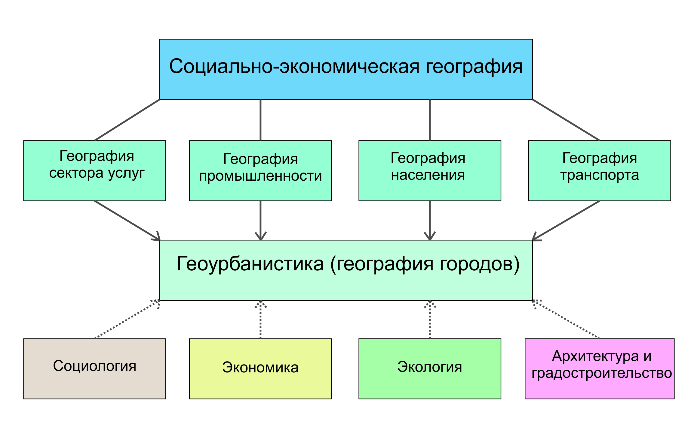
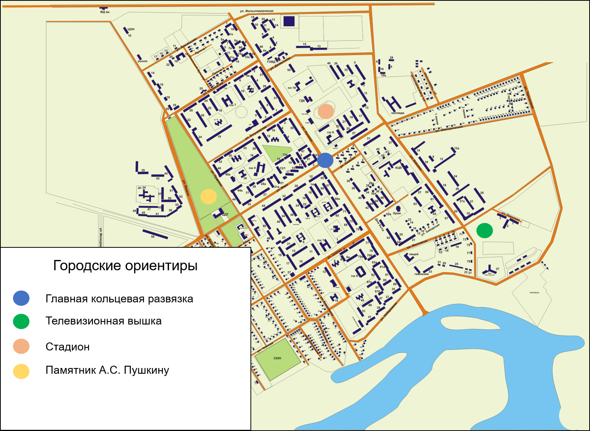

1 Вводное занятие
Знакомство с методами изучения городской территории и источниками информации
Занятие №1а. Введение в геоурбанистику
В современном мире науки часто имеют междисциплинарный характер, сочетая в себе концепции и методы сразу нескольких областей познания. Геоурбанистика или география городов представляет собой широкое направление в социально-экономической географии, изучающее организацию, развитие и функционирование городских систем разного уровня1. В последнее время часто объектом исследования геоурбанистики становятся не только города, но и населённые пункты вообще.

Рисунок 1.1. Геоурбанистика в системе наук
Объектом исследования геоурбанистики могут быть системы разного пространственного уровня:
Микроуровень (отдельные городские или сельские территории: районы, кварталы, парки, площади)
Мезоуровень (отдельные города или сёла)
Макроуровень (системы населённых пунктов района, региона или страны)
Исследования городских и сельских населённых пунктов находят применение как при поиске теоретических закономерностей (создание моделей, типологий), так и в практических целях (городское планирование, маркетинг). В рамках геоурбанистики используется множество различных общенаучных и специфических для географических наук методов.
Таблица 1.1. Основные методы исследований в геоурбанистике
| Метод | Сущность метода |
|---|---|
| Картографический | Построение карт плотности, распределения явлений |
| Сравнительный исторический | Анализ изменения ситуации во времени |
| Сравнительный географический | Анализ сходства с аналогами ситуации в другом месте |
| Статистический | Использование данных различных источников |
| Социологический | Анализ мнения населения и экспертов |
| Математический | Моделирование и расчёт индикаторов ситуации |
| Наблюдение | Непосредственные подсчёты на местности |
Все перечисленные методы могут комбинироваться в методики конкретных исследований. В географии методы исследований традиционно подразделяют также на полевые и камеральные. Первые относятся к непосредственным действиям на местности, работе с первичным источником информации. Примерами могут являться собственно полевые наблюдения, картирование местности, подсчёт транспортных потоков, социологические опросы. Вторые включают в себя все те операции, которые можно совершить, находясь в помещении – поиск информации в интернете, расчёты, обработка полевых данных.
Занятие 1б.
Наиболее распространённым понятием в отечественных географических исследованиях является экономико-географическое положение (ЭГП). ЭГП представляет собой географическое положение объекта (части города, города в целом, региона или страны) по отношению к внешним объектам, играющим важную роль для его появления и развития. Концепция ЭГП выходит за рамки своего названия и включает в себя природные, экологические, социальные, информационные и культурные компоненты2. ЭГП не является статичным, оно развивается во времени и пространстве вместе с объектами, к которым относится.
На микроуровне ЭГП определяет функции места, которые часто выражены через городские ориентиры. Территории, которые имеют выгодное экономико-географическое положение становятся «центральными», концентрируя соответствующие объекты. Центр в данном случае понятие не только и не столько геометрическое, сколько функциональное.
Определённые характеристики среды значительно облегчают понимание микрогеографического положения и территориальных связей в городе. Среди подобных ориентиров, которые могут быть оценены визуально с помощью наблюдений на местности, можно перечислить следующие:
Планировочные (направленность улично-дорожной сети, топонимика, этажность и стиль застройки, расположение относительно водных объектов, зелёных зон, магистралей и предприятий);
Транспортные (интенсивность людских и транспортных потоков, расположение остановок общественного транспорта);
Функциональные (наличие «центральных» узловых функций – здания администраций и других госучреждений, рынки, храмы, вокзалы, расположение определённых предприятий).
Методические рекомендации для выполнения задания:
Целью вводного занятия является знакомство школьников с городом как системой с внутренними и внешними связями. Полная оценка экономико-географического положения города или его отдельной части является сложной задачей, требующей значительного анализа.
По этой причине для ознакомительных целей используется приблизительная оценка ЭГП с точки зрения школьника как жителя этого населённого пункта
1) Для крупных и средних городов учитель выбирает относительно однородный участок населённого пункта (желательно знакомый учащимся) размерами до 1000х1000 м.
Для малых городов и сёл объектом исследования становится весь населённый пункт.
2) Если в занятии принимает участие более 6 человек, становится возможным разделение школьников на 2 и более групп. В малых городах в таком случае объектами исследования для других групп могут стать соседние населённые пункты.
Время, отведённое на выполнение задания, составляет 6 академических часов, из которых 2 отведены на полевые работы. Навыки, приобретённые в ходе вводного занятия, станут базой для выполнения последующих заданий в рамках практикума.
Этапы выполнения задания:
- Подготовка к полевому выходу
Перед началом полевого этапа учитель должен привести примеры локальных городских ориентиров, которые могут свидетельствовать о местоположении и функциях места. Например, «говорящая» о функциях места топонимика (ул. Кузнечная, ул. Дмитриевская Дамба, ул. Ставропольская) или детали, которые могут помочь в ориентировании по карте (вход в храм расположен с западной стороны, спутниковые тарелки обычно располагаются на южных фасадах зданий).
Таблица 1.2. Характеристики изучаемого участка
| № | Группа характеристик | Пример |
|---|---|---|
| 1 | ||
| … |
Далее участникам занятия раздаются картосхемы участков на листах формата А4. Для экономии времени рекомендуется использование заранее распечатанных картографических шаблонов – фрагментов карт из открытых Интернет-источников (Google Maps, OpenStreetMap, Яндекс).
На отдельном листе на каждую группу учащихся составляются таблицы, в которые будут вноситься данные о характеристиках городской среды (планировочных, транспортных, функциональных), позволяющих сделать выводы об ЭГП места, его функциях в системах более высокого уровня.
- Полевые работы
Школьники исследуют выбранный участок, фиксируя в таблицу XXX обнаруженные ими маркеры ЭГП. Также учащиеся должны нанести на выданную в качестве черновика картосхему участка основные городские ориентиры.
Маршрут участников занятия должен пролегать лишь вдоль основных элементов улично-дорожной сети участка, не затрагивая труднодоступные и недоступные территории, что дополнительно должно быть оговорено учителем.
- Камеральная обработка
Основными элементами отчётности по занятию являются карта-схема городских ориентиров исследованного участка, которая выполняется максимально упрощённо с использованием нумерации обнаруженных объектов.
При построении карты обязательно соблюдаются необходимые требования к оформлению картографических материалов (наличие чёткого названия, указания масштаба, наличия легенды, даты построения карты).
По итогам анализа характеристик среды школьники готовят доклад, характеризующий их роль в ЭГП участка.
Необходимые материалы: планшеты для всех участников с подготовленными картосхемами участков и листами для заполнения таблицы ХXX; простые карандаши
Пример оформления итогового задания:
Таблица 1.3. Характеристики изучаемого участка
| № | Группа характеристик | Пример |
|---|---|---|
| 1 | Планировочные | Большинство кварталов участка расположены за железной дорогой по отношению к центру города |
| 2 | Функциональные | На территории района находится железнодорожный вокзал и перехватывающая парковка |

Рисунок 1.2. Пример карты города по итогам выполнения задания
Махрова А. Г. География городов, геоурбанистика // Социально-экономическая география: понятия и термины. Словарь-справочник. Отв. ред. А.П. Горкин / Под ред. А. П. Горкин, Е.Е. Демидова (Чиркова). — Ойкумена Смоленск, 2013. — С. 53-54, 68-69.↩︎
Баранский Н. Н. Экономико-географическое положение //Становление советской экономической географии. М.: Мысль. – 1980. – С. 128-159.↩︎